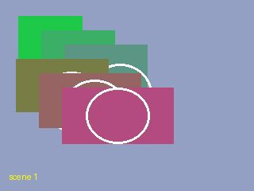
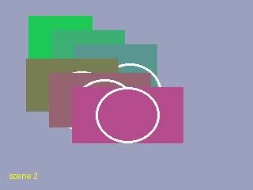
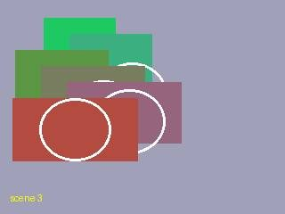
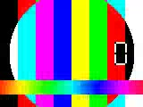
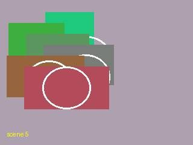
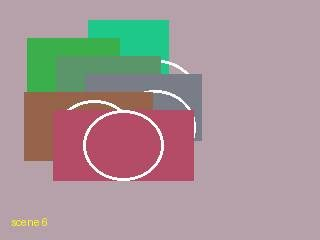
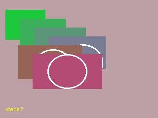
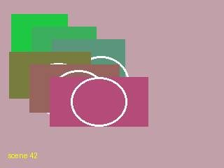
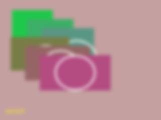
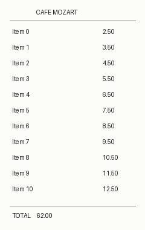

measured interpolated (2)
Open this area in OpenStreetMap (needs a connection)Stops
Salzburg, Austria
09:20–09:20 · 0 min · 1 items
{kind=link}

9766d66bac42fad6
09:20 · heic_gps_offset.heic Salzburg, Austria
11:45–11:45 · 0 min · 1 items
{kind=link}

801ce8ed89f43820
11:45 · jpeg_gps_no_offset.jpg Salzburg, Austria
11:37–20:30 · 6h 52m · 10 items
{kind=link}

535b676bfeddce27
12:05 · jpeg_no_gps.jpg Everything from this day (12)
9766d66bac42fad6
09:20 · heic_gps_offset.heic 801ce8ed89f43820
11:45 · jpeg_gps_no_offset.jpg {kind=link}

f3864d98ae91b9e8
11:37 · clip_apple_export.mov video 2s silent 535b676bfeddce27
12:05 · jpeg_no_gps.jpg {kind=link}

c089727e2194dce4
15:30 · burst_a.jpg {kind=link}
02a9b81b0763c828
15:30 · burst_b.jpg {kind=link}

59eff78caad7c74f
16:00 · exact_b.jpg {kind=link}

61f023f8173c87f1
17:10 · distinct_a.jpg {kind=link}

9f64fe79090d86a3
17:12 · distinct_b.jpg {kind=link}
7997adfd07def67e
18:00 · sharp.jpg {kind=link}

ed245c29cf10e028
18:00 · blurred.jpg {kind=link}

e669754c5e87e529
20:30 · receipt.jpg